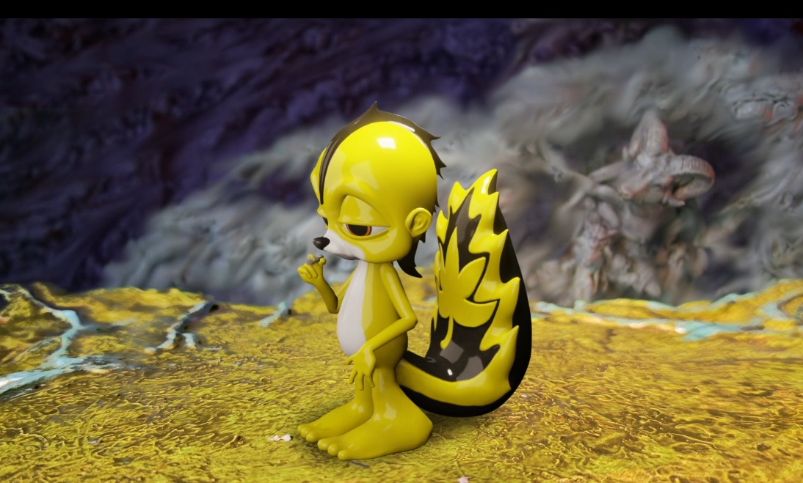

Notes
A Delusionville character from Ron English's second Nifty Gateway drop.
Selected Online Sources
Popaganda archive: Ron English Return / new NFT release

A Delusionville character from Ron English's second Nifty Gateway drop.
Popaganda archive: Ron English Return / new NFT release